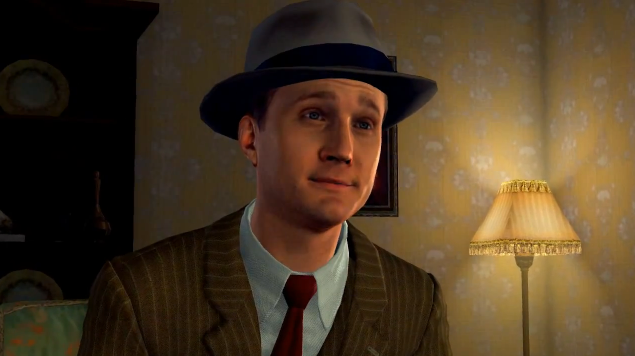
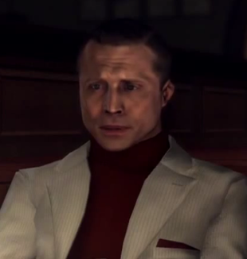
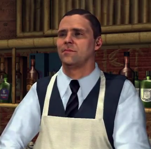
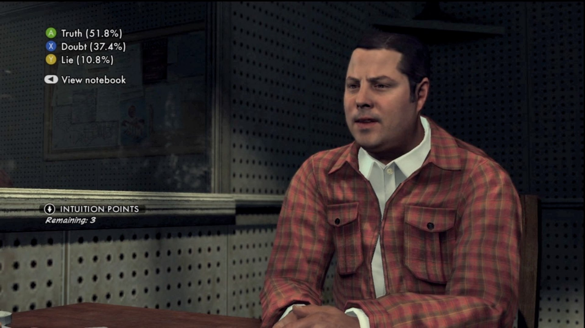
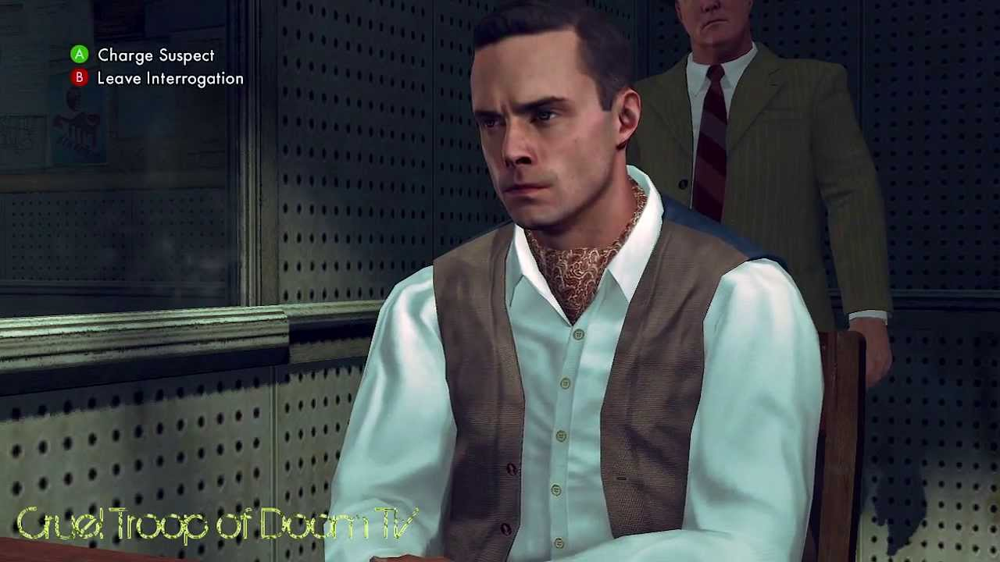
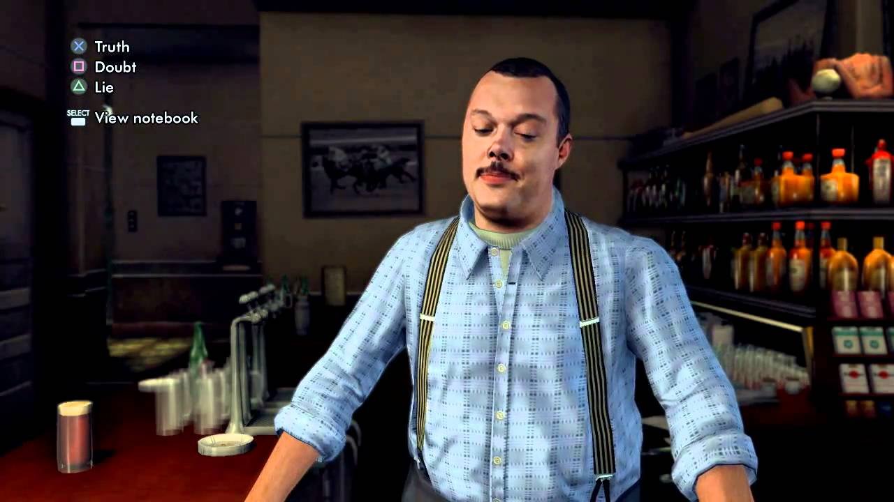
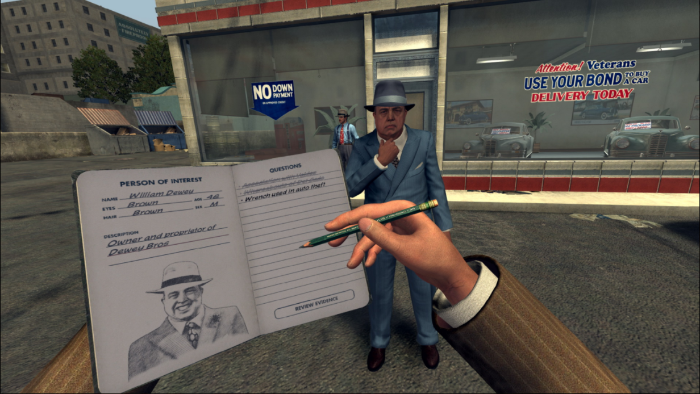
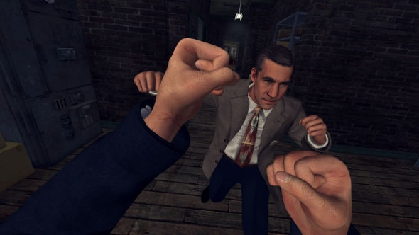
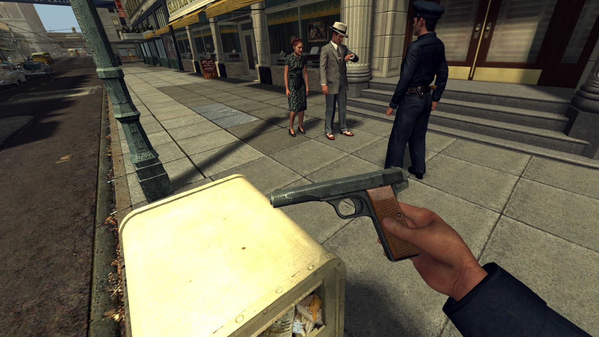

Following the end of World War II, Cole Phelps, a decorated USMC veteran of the Pacific Campaign, returns to Los Angeles, California to live with his family while taking on work as a Patrol Officer of the LAPD. In 1947, working with his partner Officer Ralph Dunn, Phelps successfully solves a major murder case and impresses his superiors, who promote him to detective. During this time, he begins falling for German lounge singer Elsa Lichtmann and soon has an affair with her. Unknown to him, Roy Earle his partner in Vice and a corrupt cop, uses this information to help several prominent figures in the city, including the Chief of Police, cover up a major scandal by making him a media scapegoat, in exchange for a place in a syndicate known as the Suburban Redevelopment Fund a development program that supplies housing for homebound WWII veterans. When his adultery is exposed, Phelps becomes disgraced in the LAPD, while his wife ends their marriage. In the game you work to get back your reputation and rise through the ranks. The story has a surprise ending that should not be spoiled. Unlike the protagonists of other Rockstar Games the main protagonist of L.A. Noire is righteous, and regularly finds himself in conflict with others who are less inclined to follow the rules. Cole Phelps is an honest detective, out to solve crimes and let the law do what it does best prosecute the offenders. He's not perfect. He has his failings, and it is they that drive him to try to hold himself and the world around him to the highest possible standard. Cole doesn't start the game as a successful detective. His beginnings lie in the role of a street cop working the beat, responding to everyday crimes whenever they happen. The more he works, though, the more opportunities he has to hone his investigative skills and impress his superiors, earning him progressively nicer desks back at Police HQ. With each promotion comes new responsibilities in new areas of police expertise, taking him from traffic all the way through arson. Each change in desk also brings a new partner, some of who are more trustworthy than others.
  
L.A. Noire is a third person shooter. But in the game you do more evidence finding and note taking than shooting. You act as a NYPD detective going around and solving cases. The game gives you a case to solve and once you solve it you move on to the next case and as you progress through cases the overall story progresses. Evidence is one of the main gameplay features in L.A. Noire. Evidence is used for the game's investigative part and are the most important items to find whilst trying to solve a case. They are found in crime scenes and at interrogations during all cases, and will help Cole Phelps to solve it. To find evidence in crime scenes, Phelps has to investigate the crime scene or the victim's body and interact with suspicious objects, that may lead him to further investigation. The evidence during interrogation are obtained by simply choosing the right answers during the interview, causing the suspect or witness to start talking the truth, or reveal what he/she is hiding. In both situations, there are several things that may aid Phelps while looking for evidence. Interrogation is one of the main gameplay features in L.A. Noire. Interrogations or interviews are likely to appear in all cases, usually more than once. The interrogation is a primary skill of the detectives in the LAPD. Cole Phelps uses the interrogation to get information from suspects, witnesses or another person related to the case. You begin with asking a question. There are several questions for him to ask that will make the suspect start talking. With the MotionScan technology, it's possible to see every facial expression of the suspect, and find out if they are lying or not. By asking something compromising, Phelps must seek evidence of actions that could expose a lie. Sweat, shifting eyes and even some tics are just some examples of effects offered by technology and should be identified by the Detective. As the player you must carefully watch every move to tell a lie from the truth.
| Developer: | - Rockstar North |
|---|---|
| Publisher: | - Rockstar Games - 1C Company - Capcom - Ak Tronic Software |
| Release Date | - Oct 17, 2006 |
| Platforms | - Playstation 2,3,4 - Android - iOS - Xbox - Xbox 360 - Windows - Macintosh |
| Modes | - Single Player |
| Genre | - Third Person Shooter - Action Adventure |
| Rating | ESRB: Mature 17+ |
  
The VR version was released on the HTC Vive VR headset it was called L.A. Nire the VR Case Files and has a different case set compared to the original game. You control the characters hands and movements with the provided controlers that come with the HTC Vive. The first case in the VR version was called armed and dangerous. This case is about a robbery at Westlake Savings & Loans that Cole Phelps and his partner Ralph Dunn pick up on their car radio. When they arrive at the bank, Phelps takes a shotgun from the car's trunk and engages in a gun fight with the robbers.Since this is an early case in the game, you can be aggressive with little harmful effect. This case was more about getting the player used to the controls rather than having a massive plot or gameplay elements.
  